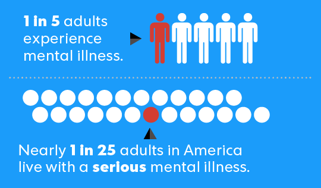
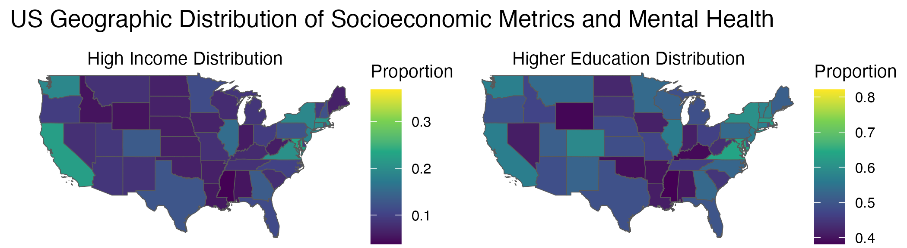
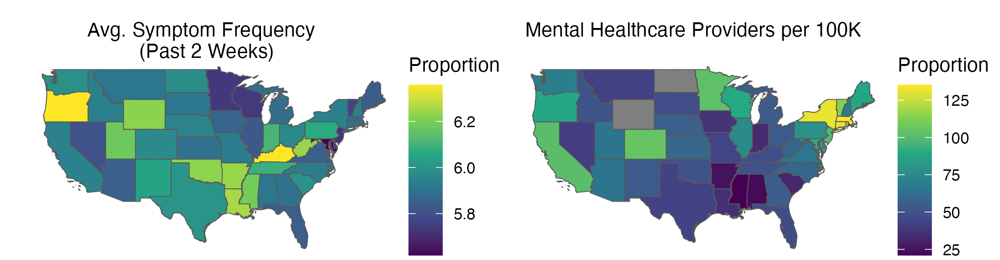

America’s Mental Health Crisis
How Income, Education, and Access to Healthcare Shape America’s Mental Wellbeing.

Millions of Americans are struggling with their mental health, but why do some communities seem to fare better than others? The answer may lie in three key factors: income, education, and access to care.
An analysis of the Household Pulse Survey and Area Health Resource Data reveals significant disparities in mental health outcomes across the United States. Addressing these inequities requires comprehensive policies that go beyond simply increasing provider availability.
The Scope of the Crisis
In 2022, the World Health Organization (WHO) reported that one in eight people worldwide—approximately 970 million individuals—live with a mental disorder. The situation is even more pressing in the United States, where over one in five adults, or 59.3 million people, experience mental health challenges annually, according to the National Institute of Mental Health (NIHM).
These numbers are driven by complex factors, including life experiences, substance use, physical health, and biological predispositions. However, many of these influences are beyond an individual’s control. What can be addressed is the socioeconomic landscape that underpins mental health: income, education, and healthcare access.
Key Findings
Mapping the Mental Health Landscape
Recent data from the US Census’ Household Pulse Survey and the US Department of Human Resources & Services Administration’s Area Health Resource Files show striking geographic patterns in mental health across the United States. The following visualization maps the distributions of income, educational attainment, mental health symptom frequency, and access to mental healthcare providers across America; two regions in this geographic distribution stand out – the South and the Northeast.

 Stack Overflow was referenced to create this map (coord_sf function, map labels).
The South generally exhibits lower income levels, lower completion of higher education, fewer mental health providers per capita, and higher frequency of mental health symptoms. In contrast, the Northeast has higher concentrations of mental health professionals (over 100 per 100,000 residents in some areas), better socioeconomic indicators, and lower reported frequency of mental health symptoms.
This raises concerns about healthcare equity since the areas with the greatest need have the fewest resources. In addition, the overlap between lower income, lower education, and limited healthcare access points to systemic issues in the mental healthcare system.
However, the relationship between socioeconomic factors and mental health across the states is very complicated and outliers exist. Utah challenges the pattern above – despite having higher income, educational attainment, and provider access, it reports notably high frequencies of mental health concerns. Conversely, South Carolina has lower rates of mental health concerns despite having fewer providers and lower socioeconomic indicators.
Income and Education vs. Mental Well-Being
To better understand the geographic patterns, we can examine how education and income levels correlate with mental health symptoms to find relationships that are not immediately apparent from the state-level maps.
States with higher educational attainment and household incomes consistently show greater availability of mental health providers, suggesting systemic barriers to care in less advantaged regions.
This raises more critical questions about healthcare equity. However, this data is also limited as it only looks at the state level, and not a more micro-scale, such as by city or county. These other factors could have more variation in the number of psychologists, income, and education level. These micro-level disparities may reveal even starker contrasts when comparing urban areas to suburban areas.

While the bar graphs show the overall relationship between socioeconomic factors and mental health symptoms, examining the direct correlation between these factors and provider access reveals an even more striking pattern. The above plots show a clear strong positive correlation with both education and income levels and the availability of mental health professionals.
There is a fundamental inequity in mental healthcare distribution: provider availability is driven more by socioeconomic status than by community need.
Access to Mental Health Providers and Well-Being

We know that educational attainment, income, and the number of psychologists per 100,000 are all correlated from a state level, and educational attainment and income affect mental well-being. Given this, in the plot above, we evaluated the relationship between the average frequency of mental health concerns in a state against the number of psychologists in the state per 100,000.
This inverse relationship highlights a critical gap in mental healthcare delivery: the places with the greatest need for mental health support appear to have the lowest access to professional help. Thus, similar to educational attainment and household income, it is evident that access to mental health professions influences mental well-being.
Conclusion
After doing in-depth analyses of the variables educational attainment, household income, and mental healthcare accessibility to assess their impact on people’s well-being, we reaffirmed our thesis stating those variables can predict individuals’ mental health and well-being.
We created four maps that showed the psychologist count per 100,000 and means of income and educational attainment are positively correlated. We could not, however, state conclusive findings about the mean frequency of mental health concerns. The horizontal bar graphs comparing the average frequency of mental health concerns against the average educational attainment showed a correlation — those with higher educational attainment are more likely to have a lower average frequency of symptoms of mental health concerns (over 2 weeks). In other words, states with higher average education levels are more likely to have residents with better well-being. The same findings are seen in the chart, which shows the relationship between household income and frequency of mental health concerns. Similarly, those with the lowest average household income level have the highest average frequency of symptoms. As household income increases, the average frequency of having symptoms over two weeks drops. We also established that educational attainment and household income are positively correlated with the number of psychologists per 100,000. This means that as a state’s education level and household income increase, the accessibility to mental health care providers also increases, which aligns with our findings from the previous plots. Lastly, we found that as the availability and accessibility to these providers grow, the frequency of mental health concerns decreases, leading to better mental well-being. In short, we concluded that educational attainment, household income, and the number of psychologists per 100,000 affect people’s mental health and well-being.
Knowing this, certain strides can be taken to reduce the frequency of experiencing mental health concerns, which could cause improvements in well-being. It would be good to better understand the impacts that education, income, and healthcare accessibility have on mental well-being. With this, legislatures might experiment with certain policies covering those areas to improve well-being. Schools could mandate learning about healthcare, allowing people to recognize their resources at a younger age. The federal and state governments could raise the minimum wage to a living wage, allowing people to access tools to improve their mental health. Finally, incentivizing people, like through loan forgiveness, to become mental health professionals in underserved areas could increase mental health access and therefore increase people’s well-being.